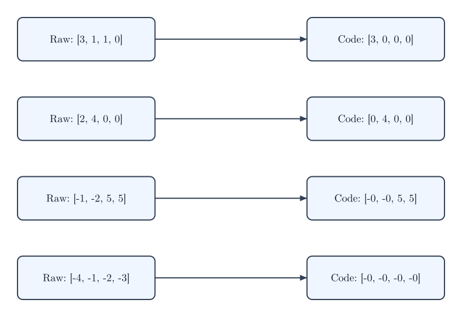
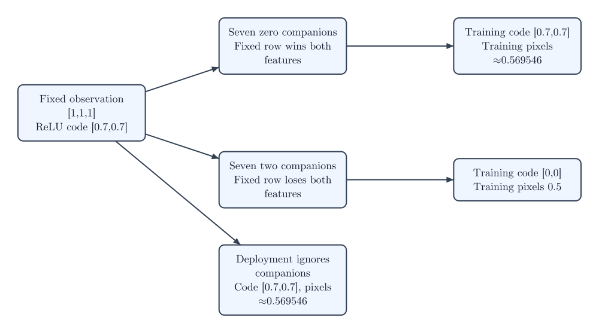
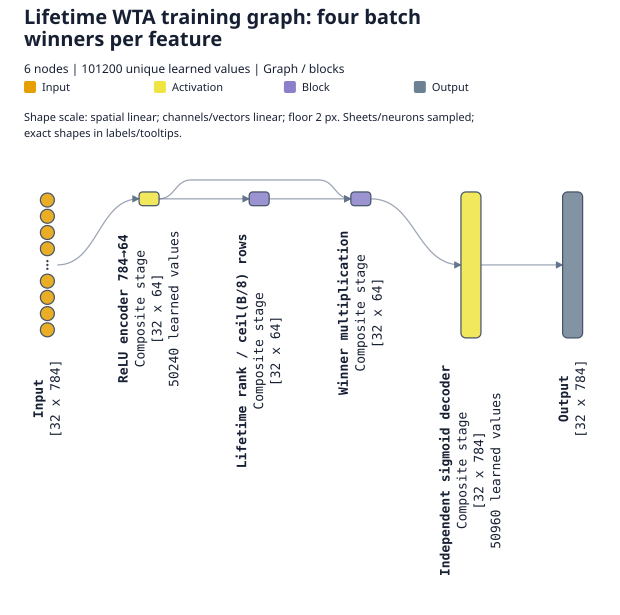
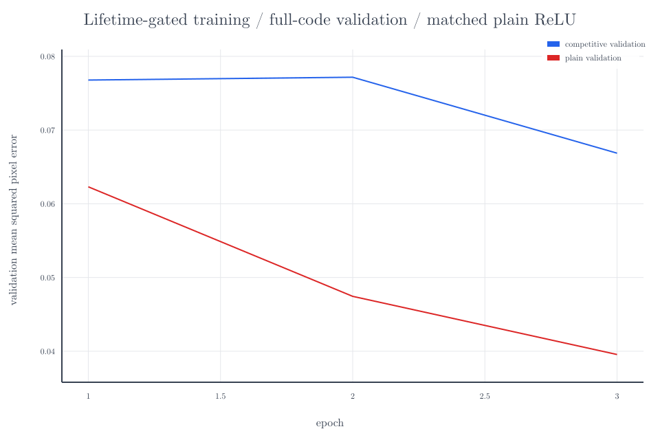
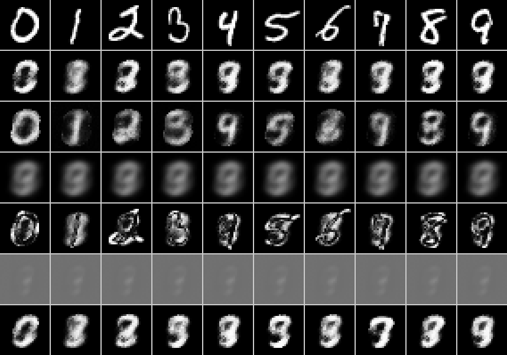

Winner-Take-All Autoencoders: Lifetime Competition during Training
Abstract
Lifetime winner-take-all competition selects observations within each feature, rather than features within each observation. This report checks batch-axis winners, stable ties and winner-only gradients by hand, demonstrates why the same observation can change its training code with different companions, then trains the original 784–64–784 ReLU/sigmoid MNIST model. During fitting each feature retains ceil(batch/8) activities; deployment uses the full ReLU code with no competition. A matched plain control shares initial weights, order and ninety-six Adam updates. Held-out MSE is0.06750 competitive versus0.04184 plain and0.06780 fitting mean. The small improvement over a constant mean and visibly weak reconstructions limit the result; training sparsity does not establish sparse deployment codes or downstream recognition quality.
Training and deployment are different paths
For batch X with B observations and d features, define A=ReLU(XW_e+b_e) of shape[B,F]. Within each column j, retain the largest q=ceil(B/8) *observations*, breaking ties by lower row index. The detached binary selector M forms T=A⊙M. Training and deployment are
[Makhzani and Frey](https://arxiv.org/abs/1409.2752) introduce lifetime competition using minibatch statistics, and also study convolutional/spatial variants. This is the migrated small fully connected experiment with sigmoid pixels, raw MNIST and MSE; it does not reproduce their published decoder, scale or classification experiments. It has no spatial winner stage, per-image top-k, L1 penalty, tied weights or straight-through gradient through ranking.
#include <dm/dm.hpp>
int main() {
std::filesystem::create_directories("build");
dm::graphics::Diagram d(52, 1100);
d.node("x", {0, 0}, "Batch X\nB images ×784 pixels")
.node("a", {6, 0}, "ReLU activities A\nB observations ×64 features")
.node("m", {6, -3}, "Training-only lifetime selector\nEach feature keeps ceil(B/8) rows")
.node("t", {12, -3}, "Training code T = A ×M\nDetached binary mask")
.node("r", {12, -6}, "Training reconstruction\nSigmoid decoder / original-image MSE")
.node("h", {12, 0}, "Deployment code H = A\nNO competition gate")
.node("d", {18, 0}, "Deployment reconstruction\nSame learned decoder")
.edge("x", "a")
.edge("a", "m")
.edge("a", "t")
.edge("m", "t")
.edge("t", "r")
.edge("a", "h")
.edge("h", "d")
.save_svg("build/wta_method.svg");
}
For every feature, the selector has q selected slots, even when selected activities are zero. Thus the training nonzero count satisfies \(\|T\|_0\le F\lceil B/8\rceil\) over the *whole batch*, not a fixed per-observation bound. One observation may win every feature. Deployment has only ReLU's natural zeros, without an enforced lifetime or per-image count. For B=32, q=4; for the final B=8 batch,q=1; B=9 keeps2 (22.2%), so finite-batch retention is rounded up. For B=1 every feature is selected and the two code paths coincide.
On fixed winner support and away from ReLU kinks, let Z=XW_e+b_e and \(D=2(R_{\rm train}-X)\odot R_{\rm train}\odot(1-R_{\rm train})/(Bd)\). The continuous chain rule is
Unselected coordinates receive zero encoder gradient for that row, while decoder biases still learn. Ranking is detached: it has no promised derivative at support changes or ties. ReLU uses zero derivative at nonpositive preactivations. Selector sorting costs O(F B log B), in addition to O(B d F) dense arithmetic; masked codes and matrix multiplication remain dense. Neither fewer selected activities nor fewer nonzero values implies sparse-kernel acceleration.
A four-by-four batch with known winners
The signed score matrix below is the source fixture for the generic selector. Columns0/1 select rows0/1; columns2/3 select row2, with zero ties resolved by lower row index where relevant. The model itself uses ReLU before lifetime selection; signed fixture values only exercise the generic API's ordering contract. Every selector and summed-code derivative is checked. The all-zero8×2 fixture also distinguishes selected slots from nonzero activities.
#include <dm/dm.hpp>
int main() {
namespace n = dm::nn;
const auto x = n::tensor(
{3., 1., 1., 0., 2., 4., 0., 0., -1., -2., 5., 5., -4., -1., -2., -3.},
{4, 4},
n::DType::Float64)
.requires_grad_();
const auto mask = n::models::CompetitiveMask(x, true, 2);
const auto code = x * mask;
const auto gradient = n::grad(n::sum(code), {x})[0];
const auto expected = n::tensor(
{1., 0., 0., 0., 0., 1., 0., 0., 0., 0., 1., 1., 0., 0., 0., 0.}, {4, 4}, n::DType::Float64);
if (mask.requires_grad() || n::max(n::abs(mask - expected)).item() != 0 ||
n::max(n::abs(gradient - expected)).item() != 0)
return 1;
const auto zero = n::zeros({8, 2}, n::DType::Float64).requires_grad_();
const auto zero_mask = n::models::CompetitiveMask(zero, true);
if (n::sum(zero_mask).item() != 2 || n::sum(zero * zero_mask).item() != 0 ||
!n::equal_bits(n::grad(n::sum(zero * zero_mask), {zero})[0], zero_mask))
return 1;
std::print("Zero fixture: two selected slots, zero nonzero activities.\n\n");
std::vector<double> tied_scores(8, 1.);
tied_scores[1] += 1e-9;
const auto equal = n::ones({8, 1}, n::DType::Float64),
perturbed = n::from_vector(tied_scores, {8, 1});
const auto original_code = equal * n::models::CompetitiveMask(equal, true),
changed_code = perturbed * n::models::CompetitiveMask(perturbed, true);
if (n::max(n::abs(changed_code - original_code)).item() < .9)
return 1;
std::print(
"At a positive tie, a1e-9 score perturbation changes the gated code by approximately1.\n\n");
std::print(
"| raw activities | selector | code | derivative of summed code |\n|---|---|---|---|\n");
std::filesystem::create_directories("build");
dm::graphics::Diagram d(62, 1100);
for (int row = 0; row < 4; ++row) {
const auto raw = n::select(x, 0, row).values_str();
const auto kept = n::select(code, 0, row).values_str();
std::print(
"| {} | {} | {} | {} |\n",
raw,
n::select(mask, 0, row).values_str(),
kept,
n::select(gradient, 0, row).values_str());
const auto from = "raw" + std::to_string(row), to = "code" + std::to_string(row);
d.node(from, {0, -2.2 * row}, "Raw: " + raw)
.node(to, {8, -2.2 * row}, "Code: " + kept)
.edge(from, to);
}
d.save_svg("build/wta_toy.svg");
}Zero fixture: two selected slots, zero nonzero activities.
At a positive tie, a1e-9 score perturbation changes the gated code by approximately1.
| raw activities | selector | code | derivative of summed code |
|---|---|---|---|
| [3, 1, 1, 0] | [1, 0, 0, 0] | [3, 0, 0, 0] | [1, 0, 0, 0] |
| [2, 4, 0, 0] | [0, 1, 0, 0] | [0, 4, 0, 0] | [0, 1, 0, 0] |
| [-1, -2, 5, 5] | [0, 0, 1, 1] | [-0, -0, 5, 5] | [0, 0, 1, 1] |
| [-4, -1, -2, -3] | [0, 0, 0, 0] | [-0, -0, -0, -0] | [0, 0, 0, 0] |

The same observation, different batch companions
Let W_e be a3×2 matrix of0.2 and b_e=[0.1,0.1]. For the observation[1,1,1], both ReLU activities are0.7. In a batch with seven all-zero companions, this row wins both features. With seven[2,2,2] companions it loses both, since their activities are1.3. The training code changes from[0.7,0.7] to[0,0], while deployment code and predictions stay unchanged. This is not a row-wise training function. Changing minibatch composition changes the objective even at fixed parameters; a full-pool gated loss is not the sum of the minibatch gated losses.
#include <dm/dm.hpp>
int main() {
namespace n = dm::nn;
const auto type = n::DType::Float64;
n::ParameterStore p(1931, type);
const auto sample = n::ones({1, 3}, type);
n::models::CompetitiveAutoencoder(p, sample, true, false, 3, 2);
p.set("encoder/W", n::full({3, 2}, .2, type));
p.set("encoder/b", n::full({2}, .1, type));
p.set("decoder/W", n::full({2, 3}, .2, type));
p.set("decoder/b", n::zeros({3}, type));
const auto low = n::models::CompetitiveAutoencoder(
p, n::concat({sample, n::zeros({7, 3}, type)}, 0), true, false, 3, 2);
const auto high = n::models::CompetitiveAutoencoder(
p, n::concat({sample, n::full({7, 3}, 2, type)}, 0), true, false, 3, 2);
const auto only = n::models::CompetitiveAutoencoder(p, sample, true, false, 3, 2);
if (n::sum(n::take_rows(low.mask, {0})).item() != 2 ||
n::sum(n::take_rows(high.mask, {0})).item() != 0 ||
!n::equal_bits(n::take_rows(low.code, {0}), n::take_rows(high.code, {0})) ||
!n::equal_bits(
n::take_rows(low.reconstruction, {0}), n::take_rows(high.reconstruction, {0})) ||
!n::equal_bits(only.reconstruction, n::take_rows(low.reconstruction, {0})) ||
n::max(
n::abs(
n::take_rows(low.training_reconstruction, {0}) -
n::take_rows(high.training_reconstruction, {0})))
.item() <= 0)
return 1;
std::print(
"| companion rows | training code for fixed row | deployment code | first training pixel | "
"deployment pixel |\n|---|---|---|---:|---:|\n");
for (const auto& [label, out] :
std::vector<std::pair<std::string, n::models::CompetitiveAeOutput>>{
{"seven zeros", low}, {"seven twos", high}})
std::print(
"| {} | {} | {} | {:.9f} | {:.9f} |\n",
label,
n::take_rows(out.training_code, {0}).values_str(),
n::take_rows(out.code, {0}).values_str(),
out.training_reconstruction.at({0, 0}),
out.reconstruction.at({0, 0}));
dm::graphics::Diagram d(56, 1100);
d.node("x", {0, 0}, "Fixed observation [1,1,1]\nReLU code [0.7,0.7]")
.node("low", {6, 2}, "Seven zero companions\nFixed row wins both features")
.node("high", {6, -2}, "Seven two companions\nFixed row loses both features")
.node("lt", {13, 2}, "Training code [0.7,0.7]\nTraining pixels ≈0.569546")
.node("ht", {13, -2}, "Training code [0,0]\nTraining pixels 0.5")
.node("deploy", {6, -5}, "Deployment ignores companions\nCode [0.7,0.7], pixels ≈0.569546")
.edge("x", "low")
.edge("x", "high")
.edge("low", "lt")
.edge("high", "ht")
.edge("x", "deploy")
.save_svg("build/wta_context.svg");
}| companion rows | training code for fixed row | deployment code | first training pixel | deployment pixel |
|---|---|---|---|---|
| seven zeros | [[0.7, 0.7]] | [[0.7, 0.7]] | 0.569546224 | 0.569546224 |
| seven twos | [[0, 0]] | [[0.7, 0.7]] | 0.500000000 | 0.569546224 |

Away from ties the gate is equivariant to permuting batch rows, but ties use the new row indices. For an equal-score column with q=1, permuting row identities can therefore change which original observation receives a slot. At a tied positive cutoff, an arbitrarily small perturbation can replace one selected row by another, causing a finite jump in the gated code. The frozen-mask derivative is useful on fixed support, not an everywhere smooth derivative or a differentiability claim at ties.
The executed training graph
The diagram runs an actual32-row batch, with four winners per feature. The shared decoder is independent of the encoder and has a sigmoid output. Deployment bypasses the gate shown here. Both variants own encoder/W,b and decoder/W,b:2×784×64+64+784=101,200 scalars.
#include <dm/dm.hpp>
int main() {
namespace n = dm::nn;
n::ParameterStore p(1931);
n::Module model(
[&](const n::Tensor& input) {
const auto net = n::models::CompetitiveAutoencoder(p, input, true);
n::model_stage("ReLU encoder 784→64", input, net.raw);
n::model_stage("Lifetime rank / ceil(B/8) rows", net.raw, net.mask);
n::model_stage(
"Winner multiplication", std::vector<n::Tensor>{net.raw, net.mask}, net.training_code);
return n::model_stage(
"Independent sigmoid decoder", net.training_code, net.training_reconstruction);
},
"Lifetime WTA training graph: four batch winners per feature");
n::ModelPlotOptions options;
options.style = n::ModelPlotStyle::Graph;
options.detail = n::ModelPlotDetail::Blocks;
options.max_neurons = 8;
options.sizing.spatial_scale = n::ModelPlotScale::Linear;
options.sizing.channel_scale = n::ModelPlotScale::Linear;
options.sizing.minimum_extent = 2;
options.sizing.max_planes = 6;
const auto figure = model.plot(n::zeros({32, 784}), options);
if (p.count() != 101200 || p.size() != 4 || figure.parameter_count() != 101200)
return 1;
std::filesystem::create_directories("build");
figure.save_svg("build/wta_architecture.svg");
std::print(
"{} learned tensors; {} learned scalars; selector is detached.\n", p.size(), p.count());
}4 learned tensors; 101200 learned scalars; selector is detached.

Genuine MNIST pools with native preparation
The canonical dataset API prepares original MNIST IDX inputs and the same balanced disjoint pools:1,000 fitting,200 validation and200 held-out images,100/20/20 per digit. Float32[0,1] pixels retain28×28 geometry, flattening only at the dense model boundary. Source IDs and provenance remain saved. Labels choose the gallery columns and never enter fitting or selection.
#include <dm/dm.hpp>
int main() {
namespace n = dm::nn;
std::filesystem::create_directories("build");
const std::filesystem::path cache = dm::datasets::data_home();
dm::datasets::prepare_example_data("mnist-assets", cache.string());
const auto pools = n::models::LoadSaliency(cache / "saliency");
n::save_npz(
"build/wta_data.npz",
{{"fit_images", pools[0].images},
{"validation_images", pools[1].images},
{"test_images", pools[2].images},
{"fit_source_ids", pools[0].source},
{"validation_source_ids", pools[1].source},
{"test_source_ids", pools[2].source},
{"test_labels", pools[2].labels}});
std::filesystem::copy_file(
cache / "saliency" / "manifest.json",
"build/wta_data_manifest.json",
std::filesystem::copy_options::overwrite_existing);
std::print("| pool | images | pixels per image | examples per digit |\n|---|---:|---:|---:|\n");
for (int i = 0; i < 3; ++i)
std::print(
"| {} | {} | 784 | {} |\n",
i == 0 ? "fit"
: i == 1 ? "validation"
: "test",
pools[i].images.size(0),
pools[i].images.size(0) / 10);
}| pool | images | pixels per image | examples per digit |
|---|---|---|---|
| fit | 1000 | 784 | 100 |
| validation | 200 | 784 | 20 |
| test | 200 | 784 | 20 |
Matched weights, explicit gated fitting and ungated selection
Both stores use seed1931, independent Glorot matrices and zero biases. Every initial parameter byte agrees, and because deployment bypasses lifetime competition, the initial deployed codes and reconstructions agree too. The training maps differ. Each variant uses three epochs, 96 Adam(.003,β1=.9,β2=.999,ε=1e-8) updates, batch32 and batch-order seed1933, with all1,000 rows once per epoch and a final batch of eight. The plain control retains the same ReLU encoder, parameter count and decoder while bypassing training competition.
The training loss uses *training_reconstruction*; validation uses *reconstruction*, the ungated deployment endpoint. Each variant selects independently among completed epochs1–3 by full validation MSE, accumulating Float64 errors from Float32 outputs. Epoch zero is measured and saved but is ineligible. Fitting losses are row-weighted pre-update minibatch means, not a full-pool gated or deployed metric. Test pixels never select weights. The loop saves exact row orders, all parameter snapshots, all validation outputs, first gradients/update and both the first32-row and first eight-row partial-batch gate probes.
#include <dm/dm.hpp>
int main() {
namespace n = dm::nn;
std::map<std::string, n::Tensor> data;
for (const auto& [name, value] : n::load_npz("build/wta_data.npz"))
data.emplace(name, value);
const auto fit = data.at("fit_images"),
validation = data.at("validation_images").reshape({200, 784});
const auto test = data.at("test_images").reshape({200, 784});
std::vector<double> matched;
std::vector<std::string> gradient_notes;
auto plot = dm::graphics::RPlot::create();
std::print("| model | epoch | fitting pre-update MSE | validation MSE |\n|---|---:|---:|---:|\n");
for (bool plain : {false, true}) {
const std::string name = plain ? "plain" : "competitive", prefix = "build/wta_" + name;
n::ParameterStore p(1931);
{
n::NoGradGuard guard;
const auto net = n::models::CompetitiveAutoencoder(p, n::zeros({1, 784}), true, plain);
}
if (plain) {
if (p.flatten() != matched)
return 1;
} else
matched = p.flatten();
if (p.count() != 101200 || p.size() != 4)
return 1;
p.save(prefix + "_initial.npz");
{
n::NoGradGuard guard;
const auto initial = n::models::CompetitiveAutoencoder(p, test, true, plain);
n::save_npz(
prefix + "_initial_outputs.npz",
{{"code", initial.code}, {"reconstruction", initial.reconstruction}});
}
n::OptimizerConfig config;
config.kind = n::OptimizerKind::Adam;
n::Optimizer optimizer(p, .003, config);
n::BatchOrder batches(1000, 32, 1933);
double best = std::numeric_limits<double>::infinity();
int selected = 0, updates = 0;
std::vector<double> epochs, valid, training;
const auto source = data.at("fit_source_ids").to_vector<int>();
std::ofstream order(prefix + "_batches.tsv");
order << "epoch\tstep\trow\tsource_id\n";
{
n::NoGradGuard guard;
const auto initial = n::models::CompetitiveAutoencoder(p, validation, true, plain);
p.save(prefix + "_epoch0.npz");
n::save_npz(prefix + "_epoch0_validation.npz", {{"prediction", initial.reconstruction}});
}
for (int epoch = 1; epoch <= 3; ++epoch) {
batches.begin_epoch();
double total = 0;
int seen = 0;
for (;;) {
const auto rows = batches.next();
if (rows.empty())
break;
const auto images = n::take_rows(fit, rows), input = images.reshape({images.size(0), 784});
const auto net = n::models::CompetitiveAutoencoder(p, input, true, plain);
const auto objective = n::mse(net.training_reconstruction, input);
if (n::max(
n::abs(
n::sum(net.mask, {0}) -
(plain ? double(input.size(0)) : double((input.size(0) + 7) / 8))))
.item() != 0)
return 1;
if (updates == 0 || updates == 31) {
n::NoGradGuard guard;
const auto probe = n::models::CompetitiveAutoencoder(p, input, true, plain);
if (updates == 31)
p.save(prefix + "_partial_arrays.npz");
n::NamedTensors arrays;
if (updates == 31)
arrays.emplace_back("images", images);
arrays.insert(
arrays.end(),
{{"raw", probe.raw},
{"mask", probe.mask},
{"training_code", probe.training_code},
{"reconstruction", probe.training_reconstruction}});
n::save_npz(prefix + (updates == 0 ? "_first_probe.npz" : "_partial_probe.npz"), arrays);
}
if (updates == 0) {
n::GradOptions keep;
keep.retain_graph = true;
const auto gradients = n::grad(objective, p.parameters(), keep);
n::NamedTensors arrays;
for (std::size_t i = 0; i < gradients.size(); ++i) {
const double norm = n::sqrt(n::sum(n::square(gradients[i]))).item();
if (!std::isfinite(norm) || norm <= 0)
return 1;
arrays.emplace_back(p.names()[i], gradients[i]);
gradient_notes.push_back(
std::format("| {} | {} | {:.8f} |\n", name, p.names()[i], norm));
}
n::save_npz(prefix + "_first_gradients.npz", arrays);
n::save_npz(prefix + "_first_batch.npz", {{"images", images}});
}
const double value = objective.item();
if (!std::isfinite(value) || value < 0)
return 1;
total += rows.size() * value;
seen += int(rows.size());
optimizer.minimize(objective);
if (updates == 0)
p.save(prefix + "_first_update.npz");
for (auto row : rows)
order << epoch << '\t' << updates << '\t' << row << '\t' << source[row] << '\n';
++updates;
}
n::NoGradGuard guard;
const auto prediction =
n::models::CompetitiveAutoencoder(p, validation, true, plain).reconstruction;
const double score =
n::mse(n::cast(prediction, n::DType::Float64), n::cast(validation, n::DType::Float64))
.item();
if (seen != 1000 || !std::isfinite(score))
return 1;
p.save(prefix + "_epoch" + std::to_string(epoch) + ".npz");
n::save_npz(
prefix + "_epoch" + std::to_string(epoch) + "_validation.npz",
{{"prediction", prediction}});
if (score < best) {
best = score;
selected = epoch;
p.save(prefix + "_best.npz");
}
epochs.push_back(epoch);
valid.push_back(score);
training.push_back(total / seen);
std::print("| {} | {} | {:.9f} | {:.9f} |\n", name, epoch, total / seen, score);
}
if (updates != 96 || optimizer.iterations() != 96 || !order)
return 1;
n::save_npz(
prefix + "_selection.npz",
{{"epoch", n::full({}, selected, n::DType::Int32)},
{"validation_mse", n::full({}, best, n::DType::Float64)},
{"fit_path", n::from_vector(training, {3})},
{"validation_path", n::from_vector(valid, {3})}});
plot.lines(
epochs,
valid,
name + " validation",
plain ? dm::graphics::RGB{220, 38, 38} : dm::graphics::RGB{37, 99, 235},
2.);
}
std::print("\n| model | parameter | first gradient L2 norm |\n|---|---|---:|\n");
for (const auto& line : gradient_notes)
std::print("{}", line);
plot.x_label("epoch")
.y_label("validation mean squared pixel error")
.title("Lifetime-gated training / full-code validation / matched plain ReLU")
.save_svg("build/wta_learning.svg");
}| model | epoch | fitting pre-update MSE | validation MSE |
|---|---|---|---|
| competitive | 1 | 0.185723426 | 0.076782734 |
| competitive | 2 | 0.143714870 | 0.077165826 |
| competitive | 3 | 0.113562536 | 0.066863917 |
| plain | 1 | 0.100554605 | 0.062301542 |
| plain | 2 | 0.057249008 | 0.047446870 |
| plain | 3 | 0.045877909 | 0.039556858 |
| model | parameter | first gradient L2 norm |
|---|---|---|
| competitive | encoder/W | 0.00297514 |
| competitive | encoder/b | 0.00039468 |
| competitive | decoder/W | 0.00474380 |
| competitive | decoder/b | 0.00738240 |
| plain | encoder/W | 0.01044028 |
| plain | encoder/b | 0.00166489 |
| plain | decoder/W | 0.01369790 |
| plain | decoder/b | 0.00738278 |

Fresh deployment, training diagnostics and code controls
Fresh stores restore selected weights. Full-pool deployed predictions, exact repeat/standalone decoding, single-versus-batch inference and immutable parameter bytes are checked. A separate 32-row held-out probe is explicitly a *training-mode diagnostic*, not a deployment code. A code-row shift preserves the multiset of deployed codes while misaligning targets; zero codes remove encoder information. Both frozen decoder controls are scored without refitting. The fitting pixel mean uses only1,000 fitting images, accumulating Float64 then narrowing once.
#include <dm/dm.hpp>
int main() {
namespace n = dm::nn;
std::map<std::string, n::Tensor> data;
for (const auto& [name, value] : n::load_npz("build/wta_data.npz"))
data.emplace(name, value);
const auto clean = data.at("test_images").reshape({200, 784});
const auto mean = n::broadcast_to(
n::cast(
n::mean(
n::cast(data.at("fit_images").reshape({1000, 784}), n::DType::Float64), {0}, true),
n::DType::Float32),
clean.shape());
n::save_npz("build/wta_mean.npz", {{"mean", mean}});
std::print(
"| model | held-out MSE | zero-code MSE | shifted-code MSE | selected training-probe rows "
"per feature | deployed nonzero fraction "
"|\n|---|---:|---:|---:|---:|---:|\n");
for (bool plain : {false, true}) {
const std::string name = plain ? "plain" : "competitive", prefix = "build/wta_" + name;
n::ParameterStore p(1931);
p.load(prefix + "_best.npz", false);
const auto before = p.flatten();
n::NoGradGuard guard;
n::NamedTensors outputs, diagnostics;
for (const auto& split : {"fit", "validation", "test"}) {
const auto images = data.at(std::string(split) + "_images");
const auto net =
n::models::CompetitiveAutoencoder(p, images.reshape({images.size(0), 784}), true, plain);
outputs.emplace_back(std::string(split) + "_code", net.code);
outputs.emplace_back(std::string(split) + "_reconstruction", net.reconstruction);
diagnostics.emplace_back(std::string(split) + "_raw", net.raw);
diagnostics.emplace_back(std::string(split) + "_mask", net.mask);
}
const auto net = n::models::CompetitiveAutoencoder(p, clean, true, plain);
const auto repeat = n::models::CompetitiveAutoencoder(p, clean, true, plain);
const auto single = n::models::CompetitiveAutoencoder(p, n::take_rows(clean, {0}), true, plain);
const auto decoded = n::dense(p, "decoder", net.code, 784, n::Activation::Sigmoid);
if (n::max(n::abs(repeat.reconstruction - net.reconstruction)).item() != 0 ||
n::max(n::abs(decoded - net.reconstruction)).item() != 0 ||
n::max(n::abs(single.reconstruction - n::take_rows(net.reconstruction, {0}))).item() > 1e-6)
return 1;
const auto zero = n::dense(p, "decoder", n::zeros({200, 64}), 784, n::Activation::Sigmoid);
const auto shifted_code =
n::concat({n::slice_axis(net.code, 0, 1, 200), n::slice_axis(net.code, 0, 0, 1)}, 0);
const auto shifted = n::dense(p, "decoder", shifted_code, 784, n::Activation::Sigmoid);
outputs.emplace_back("zero_reconstruction", zero);
outputs.emplace_back("shuffled_reconstruction", shifted);
double selected_score = 0;
for (const auto& [key, value] : n::load_npz(prefix + "_selection.npz"))
if (key == "validation_mse")
selected_score = value.item();
const auto val = outputs[3].second;
const auto target = data.at("validation_images").reshape({200, 784});
if (std::abs(
n::mse(n::cast(val, n::DType::Float64), n::cast(target, n::DType::Float64)).item() -
selected_score) > 1e-12)
return 1;
n::save_npz(prefix + "_outputs.npz", outputs);
n::save_npz(prefix + "_deployment_diagnostics.npz", diagnostics);
p.save(prefix + "_model_arrays.npz");
std::vector<std::int64_t> rows(32);
std::iota(rows.begin(), rows.end(), 0);
const auto images = n::take_rows(data.at("test_images"), rows);
const auto probe = n::models::CompetitiveAutoencoder(p, images.reshape({32, 784}), true, plain);
n::save_npz(
prefix + "_selected_probe.npz",
{{"images", images},
{"raw", probe.raw},
{"mask", probe.mask},
{"training_code", probe.training_code},
{"reconstruction", probe.training_reconstruction}});
if (before != p.flatten() ||
n::max(n::abs(n::sum(probe.mask, {0}) - (plain ? 32. : 4.))).item() != 0)
return 1;
std::print(
"| {} | {:.9f} | {:.9f} | {:.9f} | {} | {:.6f} |\n",
name,
n::mse(n::cast(net.reconstruction, n::DType::Float64), n::cast(clean, n::DType::Float64))
.item(),
n::mse(n::cast(zero, n::DType::Float64), n::cast(clean, n::DType::Float64)).item(),
n::mse(n::cast(shifted, n::DType::Float64), n::cast(clean, n::DType::Float64)).item(),
plain ? 32 : 4,
n::count_nonzero(net.code).item() / net.code.numel());
}
std::print(
"\nFitting-mean MSE {:.9f}. Fresh restore, exact encode/decode/repeat and immutable weights "
"pass.\n",
n::mse(n::cast(mean, n::DType::Float64), n::cast(clean, n::DType::Float64)).item());
}| model | held-out MSE | zero-code MSE | shifted-code MSE | selected training-probe rows per feature | deployed nonzero fraction |
|---|---|---|---|---|---|
| competitive | 0.067503750 | 0.191458436 | 0.083673118 | 4 | 0.968516 |
| plain | 0.041842456 | 0.221799367 | 0.069317967 | 32 | 0.840313 |
Fitting-mean MSE 0.067798074. Fresh restore, exact encode/decode/repeat and immutable weights pass.
The selected competitive MSE0.067503750 is only about0.43% below the fitting mean0.067798074, and substantially above the plain model0.041842456. Competitive shifted/zero-code MSE is 0.083673118/0.191458436. Code alignment affects reconstruction, but this short run does not show a reconstruction advantage from lifetime competition. No classification confusion matrix, semantic disentanglement or general superiority follows from pixel MSE.
The competitive model's deployed test code is nonzero in96.85% of its12,800 coordinates, versus84.03% for plain. The12.5% selected training-slot rate is therefore not its deployment activity rate. This is an observed property of these selected weights and inputs, not a claim that ReLU codes must always be dense.
All ten digits without quality filtering
Columns are the first held-out occurrence of digits0–9, chosen without reconstruction scores. Rows are original, competitive deployment, plain deployment, fitting mean, absolute competitive error, zero-code decoder and shifted-code decoder. Every panel shares fixed[0,1] grayscale, nearest-neighbour enlargement and unamplified errors. Deployment uses raw full ReLU codes, with no copied source pixels and no training-mode gating in these reconstruction rows.
#include <dm/dm.hpp>
int main() {
namespace n = dm::nn;
std::map<std::string, n::Tensor> data, sparse, plain;
for (const auto& [key, value] : n::load_npz("build/wta_data.npz"))
data.emplace(key, value);
for (const auto& [key, value] : n::load_npz("build/wta_competitive_outputs.npz"))
sparse.emplace(key, value);
for (const auto& [key, value] : n::load_npz("build/wta_plain_outputs.npz"))
plain.emplace(key, value);
const auto mean = n::load_npz("build/wta_mean.npz")[0].second;
const auto labels = data.at("test_labels").to_vector<int>(),
ids = data.at("test_source_ids").to_vector<int>();
const auto clean = data.at("test_images").reshape({200, 784});
std::vector<std::int64_t> rows;
for (int digit = 0; digit < 10; ++digit) {
const auto found = std::find(labels.begin(), labels.end(), digit);
if (found == labels.end())
return 1;
rows.push_back(found - labels.begin());
}
std::vector<n::Tensor> panels;
for (const auto& values : std::vector<n::Tensor>{
clean,
sparse.at("test_reconstruction"),
plain.at("test_reconstruction"),
mean,
n::abs(sparse.at("test_reconstruction") - clean),
sparse.at("zero_reconstruction"),
sparse.at("shuffled_reconstruction")})
panels.push_back(n::take_rows(values, rows));
n::save_image_grid(
n::concat(panels, 0).reshape({70, 28, 28, 1}),
"build/wta_reconstructions.png",
10,
0,
1,
2,
.8,
3);
std::print("| digit | original MNIST source ID |\n|---:|---:|\n");
for (int digit = 0; digit < 10; ++digit)
std::print("| {} | {} |\n", digit, ids[rows[digit]]);
}| digit | original MNIST source ID |
|---|---|
| 0 | 66921 |
| 1 | 63380 |
| 2 | 68936 |
| 3 | 62280 |
| 4 | 62094 |
| 5 | 65222 |
| 6 | 61209 |
| 7 | 61721 |
| 8 | 69402 |
| 9 | 62570 |

Verification and limits
The core already owns stable signed selection and both competitive paths. This conversion uses its lifetime mode directly; native Python/R retain their own loops and simple invariant checks. Native tests add every small lifetime-model parameter derivative, input first/second derivatives on positive separated support, batch-context counterexamples and zero-slot conventions. Language tests retain owning endpoints after collection and distinguish16 positive deployment activities from two selected training slots in an8×2 toy. All original29 archives are compared by dtype, shape and value bytes, including first/partial/selected probes and all model snapshots. The optional NumPy oracle checks full first derivatives, exact first Adam rounding, every validation candidate, pool/control predictions and official disjoint source IDs.
These are fully connected educational fits with one seed and three epochs. Lifetime training selection is batch-dependent and disappears at deployment; it does not guarantee per-image or deployed sparsity. Ties are deterministic but not differentiable, and rounded selected slots may contain zeros. Both paths retain dense64-coordinate storage; no codec, quantization or bitrate benchmark is implemented. Blurry outputs, weak competitive MSE and the stronger plain control remain visible rather than being treated as evidence for downstream usefulness.